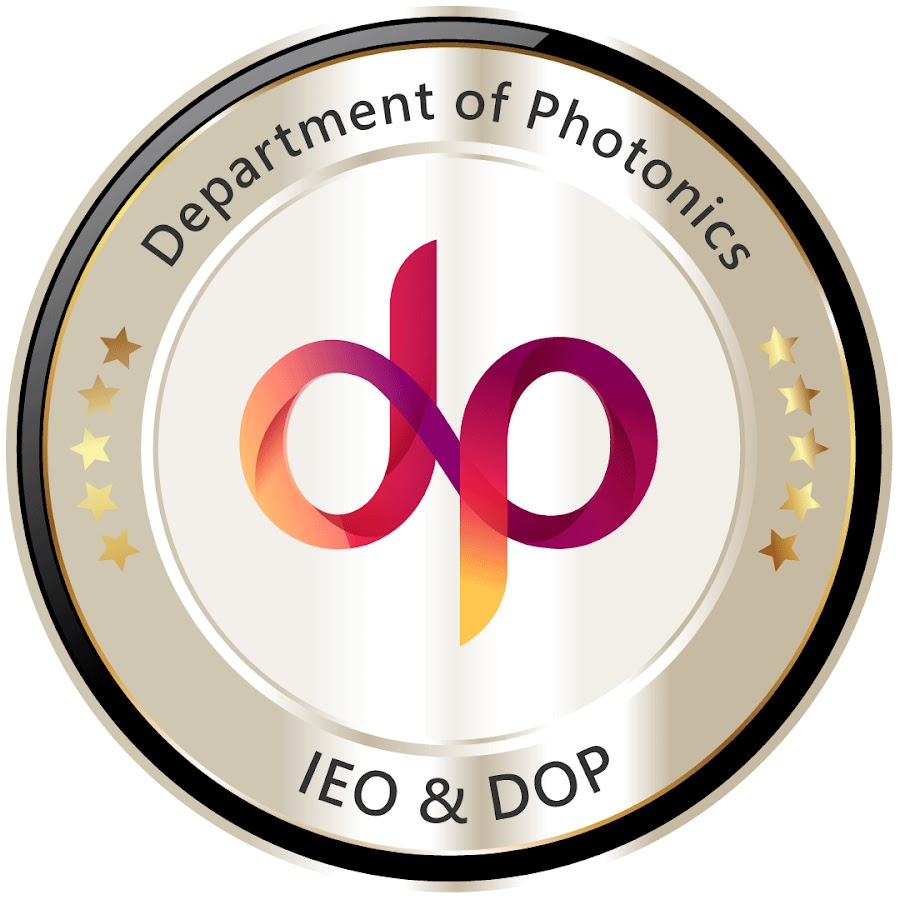
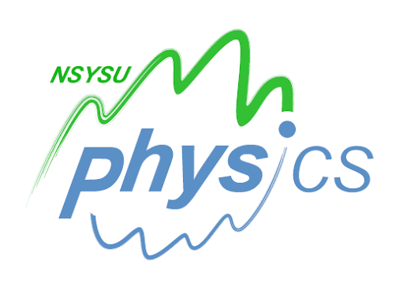

Associate Researcher
Chang Gung University
Center for Sustainability and Energy Technologies · Taoyuan, Taiwan
Academic researcher and photovoltaic engineer combining university research with more than a decade of industrial experience in solar-cell process development, device engineering and reliability.
Chang Gung University
Center for Sustainability and Energy Technologies · Taoyuan, Taiwan
Chang Gung University
Center for Reliability Sciences and Technologies · Taoyuan, Taiwan
Chang Gung University
Center for Green Technology · Taoyuan, Taiwan
Neo Solar Power Corporation / United Renewable Energy Corporation
Hsinchu, Taiwan
Industrial Technology Research Institute
Hsinchu, Taiwan
Research group member working on advanced photovoltaic and energy-storage materials.
Visit research group ↗Advances in Photovoltaic Technologies, Energies.
View special issue ↗Advances in Photovoltaic Technologies II, Energies.

Ph.D.Hsinchu, Taiwan
Electro-Optical Engineering
Hsinchu, Taiwan
Electro-Optical Engineering

B.S.Kaohsiung, Taiwan
Physics
染料敏化太陽電池的金屬氧化物光電極中電子傳遞機制之研究
微聚焦端泵浦摻釹釩酸釔雷射在簡併共振腔下被修正過的自發輻射